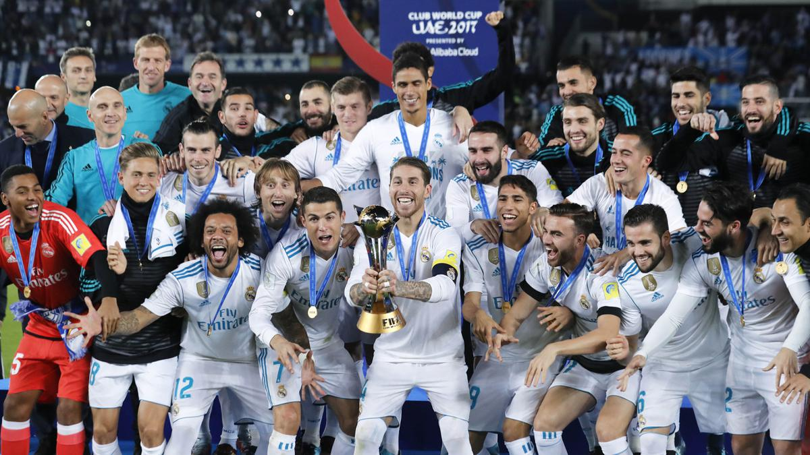

SEJARAH
Real Madrid Club de Fútbol (pengucapan bahasa Spanyol: [reˈal maˈðɾið ˈkluβ ðe ˈfutβol]; Royal Madrid Football Club), umumnya dikenal sebagai Real Madrid, adalah klub sepak bola profesional yang berbasis di Madrid, Spanyol. Didirikan pada tahun 1902 sebagai Madrid Football Club, secara tradisional mengenakan kostum kandang putih. Kata Real ("dari kerajaan") Spanyol dan dianugerahkan ke klub oleh Raja Alfonso XIII pada tahun 1920 bersama-sama dengan mahkota kerajaan di lambang klub. Klub ini telah memainkan pertandingan kandang di Stadion Santiago Bernabéu dengan kapasitas 85.454 di pusat kota Madrid sejak tahun 1947. Klub ini merupakan salah satu klub sepak bola terkaya di dunia dalam hal pendapatan, senilai €968,3 juta dan total aset yang senilai €7,2miliar (atau $7,2 miliar) di 2019.[4][5] Ini adalah salah satu dari tiga klub untuk tidak pernah terdegradasi dari papan atas sepak bola Spanyol, bersama dengan Athletic Bilbao dan Barcelona club ini juga merupakan club dengan torehan piala UCL terbanyak. Real Madrid memiliki banyak persaingan lama, terutama El Clásico dengan Barcelona dan El Derbi madrileño dengan Atlético Madrid. Klub ini memantapkan dirinya sebagai kekuatan utama dalam sepak bola Spanyol dan Eropa selama tahun 1950. Di dalam negeri, Klub ini juga merupakan salah satu klub terbaik abad ke-20 menurut FIFA. Klub ini menjuarai Liga Champions 3 musim berturut-turut dibawah kepelatihan Zinedine Zidane dan dengan mesin golnya yaitu pemain terbaik dunia Cristiano Ronaldo. Dalam kompetisi domestik, klub ini telah meraih 36 gelar La Liga (rekor), 20 gelar Piala Raja Spanyol, 12 Piala Super Spanyol, 1 Copa Eva Duarte, 1 Copa de la Liga,[6]. Di kompetisi tingkat Eropa dan Dunia, klub ini telah meraih 15 gelar Piala Champions Eropa/Liga Champions UEFA (rekor), 2 Piala UEFA/Liga Eropa UEFA, 5 Piala Super UEFA, dan 9 kejuaraan dunia antar klub (3 Piala Interkontinental , 5 Piala Dunia Antarklub FIFA dan 1 Piala Ibero-American )..
COACH
Name: Carlo Ancelotti
Tanggal lahir / Umur: 10 Jun 1959 (64) Tempat kelahiran: Reggiolo Italia Kewarganegaraan: Italia Italia Periode rataan sebagai pelatih: 2,31 Tahun Lisensi Kepelatihan: Lisensi Pro UEFA Formasi yang disukai: 4-3-3 Attacking Agen: CAA Base Ltd verifiedCarlo Ancelotti kembali mengantarkan Real Madrid sebagai juara Liga Champions. Don Carlo (Bos Carlo) mengukuhkan status pelatih tersukses di kompetisi tersebut. Real Madrid jadi kampiun Liga Champions 2023/2024...
TROPHIES REAL MADRID
Per 3 juni 2024, Real Madrid telah memenangi 36 kali gelar juara La Liga, 15 kali juara Piala Eropa/Liga Champions UEFA dan 20 Gelar Copa Del Rey. Klub ini juga menerima penghargaan Klub Terbaik Abad ke-20 menurut FIFA pada 23 Desember 2000.[117] Selain itu, Madrid juga berhasil menerima FIFA Order of Merit pada tahun 2004.[118] Sebagai juara lebih dari 5 kali Liga Champions, Real Madrid diperkenankan untuk mengenakan lencana kehormatan (badge of honours) pada kaus mereka ketika mereka bertanding pada pertandingan Liga Champions.
PEMAIN
FOLLOW ME